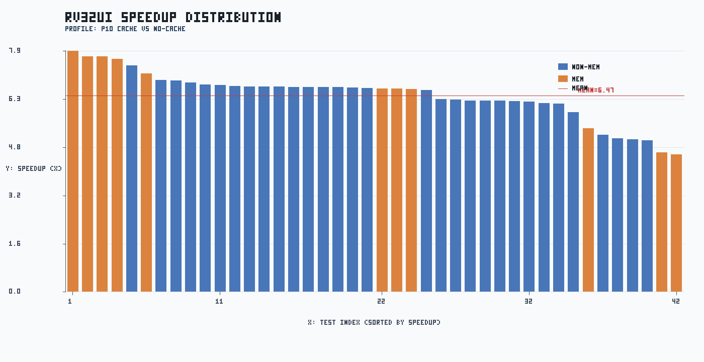
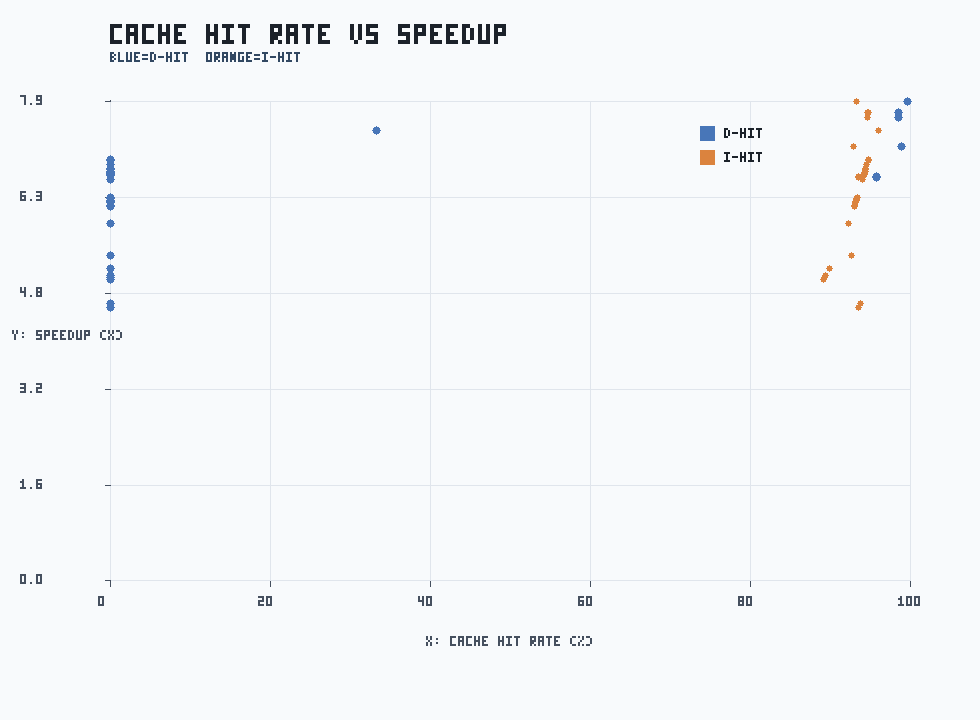
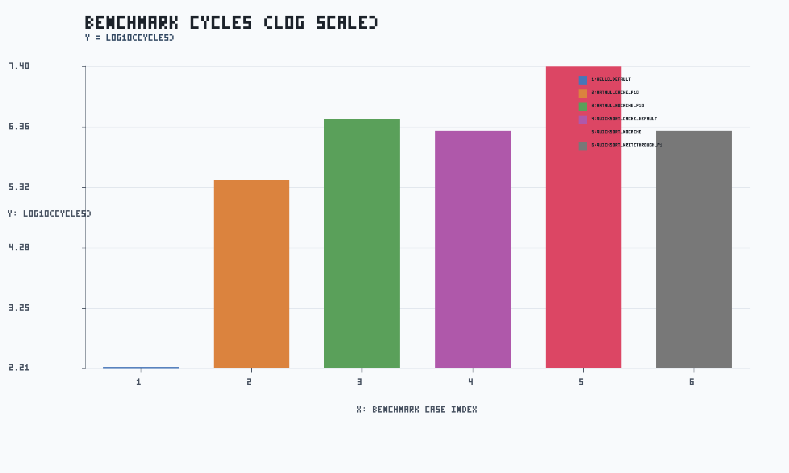

生成日期：2026-04-09
本次全量测试验证了 Cache 模块功能。核心结论如下：
| 数据类别 | 输入文件 | 处理用途 |
|---|---|---|
| rv32ui p1 | docs/rv32ui_perf_full_p1.csv |
cache on + penalty=1 的基线 |
| rv32ui p10 | docs/rv32ui_perf_full_p10.csv |
cache on + penalty=10 的对比组 |
| rv32ui no-cache | docs/rv32ui_perf_full_nocache.csv |
cache off 的基线组 |
| ctest 日志 | tmp/full_run_20260409/ctest_full.log |
正确性统计（19 项） |
| benchmark 返回码 | tmp/full_run_20260409/benchmark_rcs.csv |
组合场景正确性检查 |
| benchmark 性能日志 | tmp/full_run_20260409/{hello,matmul,quicksort}_*.log |
cycles/instrs/hit/stall 提取 |
| 配置名 | cache 状态 | miss penalty | 含义 |
|---|---|---|---|
| p1 | 开启 | 1 | 低 miss 代价组，用于观察理想 cache 效果 |
| p10 | 开启 | 10 | 高 miss 代价组，用于观察 miss 对性能放大效应 |
| no-cache | 关闭 | 10 | 无 cache 基线；访存直接走内存路径 |
speedup_p10 = cycles_nocache / cycles_p10。值越大表示 cache 收益越高。speedup_p1 = cycles_nocache / cycles_p1。用于评估低 penalty 下收益上限。penalty_ratio = cycles_p10 / cycles_p1。用于评估 workload 对 miss penalty 敏感度。corr(D-hit, speedup) 与 corr(I-hit, speedup) 用于衡量命中率与收益关系。| case | rc |
|---|---|
| hello_default | 0 |
| matmul_cache_p10 | 0 |
| matmul_nocache_p10 | 0 |
| quicksort_cache_default | 0 |
| quicksort_nocache | 0 |
| quicksort_writethrough_p1 | 0 |
| test | speedup | cycles_nocache | cycles_p10 | 说明 |
|---|---|---|---|---|
| rv32ui-p-ld_st | 7.93x | 15198 | 1916 | 纯内存加载/存储操作，无Cache时受制于内存墙，开启Cache后收益最大化 |
| rv32ui-p-sh | 7.76x | 7083 | 913 | 内存半字写入 |
| rv32ui-p-sb | 7.76x | 6500 | 838 | 内存字节写入 |
| rv32ui-p-sw | 7.68x | 7150 | 931 | 内存字写入 |
| rv32ui-p-fence_i | 7.45x | 5045 | 677 | 指令屏障，重度依赖指令/数据同步，Cache显著降低了同步代价 |
| test | speedup | cycles_nocache | cycles_p10 | 说明 |
|---|---|---|---|---|
| rv32ui-p-lh | 4.53x | 3864 | 853 | 相比字对齐访问，非对齐/半字读取的流水线开销占比略高，稀释了部分访存收益 |
| rv32ui-p-lhu | 4.60x | 3963 | 862 | 相比字对齐访问，非对齐/半字读取的流水线开销占比略高，稀释了部分访存收益 |
| rv32ui-p-jal | 4.99x | 1223 | 245 | 控制流跳转指令 |
| rv32ui-p-simple | 5.03x | 1036 | 206 | 基础 ALU 运算 |
| rv32ui-p-auipc | 5.06x | 1256 | 248 | PC相关立即数加载。本身不访问数据内存，仅享受 I-Cache 收益 |
| case | cycles | instrs | i_hit | d_hit | stall | cache_stall | hazard_stall | checksum | 分析 |
|---|---|---|---|---|---|---|---|---|---|
| hello_default | 161 | 113 | 99.15% | 95.24% | 45 | 24 | 21 | - | - |
| matmul_cache_p10 | 277966 | 230400 | 99.98% | 99.50% | 693 | 528 | 165 | - | 矩阵乘法具有极强的空间局部性。高达 99.5% 的 D-hit 表明 Cache 完美捕捉了数组的顺序预取，成功将几百万的周期压缩至二十多万 |
| matmul_nocache_p10 | 3151861 | 230400 | 0.00% | 0.00% | 165 | 0 | 165 | - | - |
| quicksort_cache_default | 1972901 | 1724935 | 100.00% | 99.86% | 2228 | 2172 | 56 | e48d8e25 | 快排涉及大量内存元素的交换，属于重度读写混合场景。12倍以上的加速证实了当前 Cache 容量和替换策略非常适合该算法 |
| quicksort_nocache | 25074548 | 1724935 | 0.00% | 0.00% | 56 | 0 | 56 | e48d8e25 | - |
| quicksort_writethrough_p1 | 1972097 | 1724935 | 100.00% | 97.36% | 1424 | 1368 | 56 | e48d8e25 | 写透模式下，虽然 D-hit 略降至 97.36%，但总周期数几乎无变化。说明写缓冲(Write Buffer)有效隐藏了写穿透的代价 |
图1：rv32ui speedup 条形图

图2：命中率与 speedup 散点图

图3：benchmark cycles 对比（对数）

{"ok": true, "clients": 0, "buffered_lines": 0, "total_lines": 0, "last_cycle": -1, "child_pid": null, "child_running": false, "ts": 1775732411}
{kind=link}
{kind=link}
{kind=link}